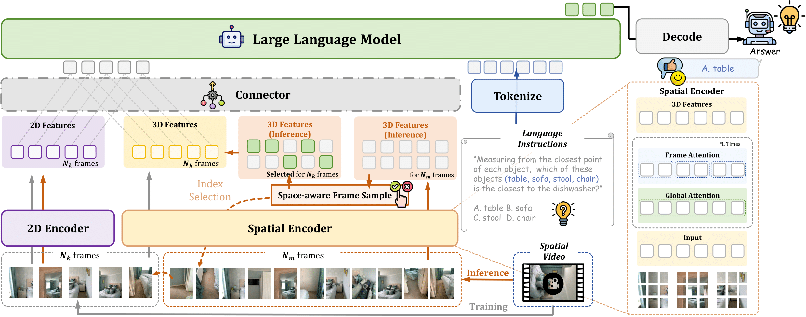
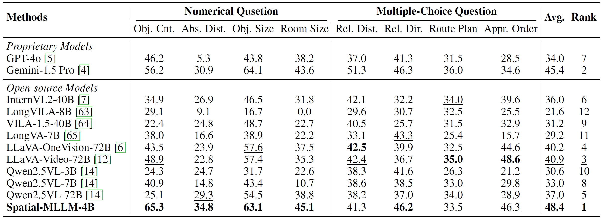
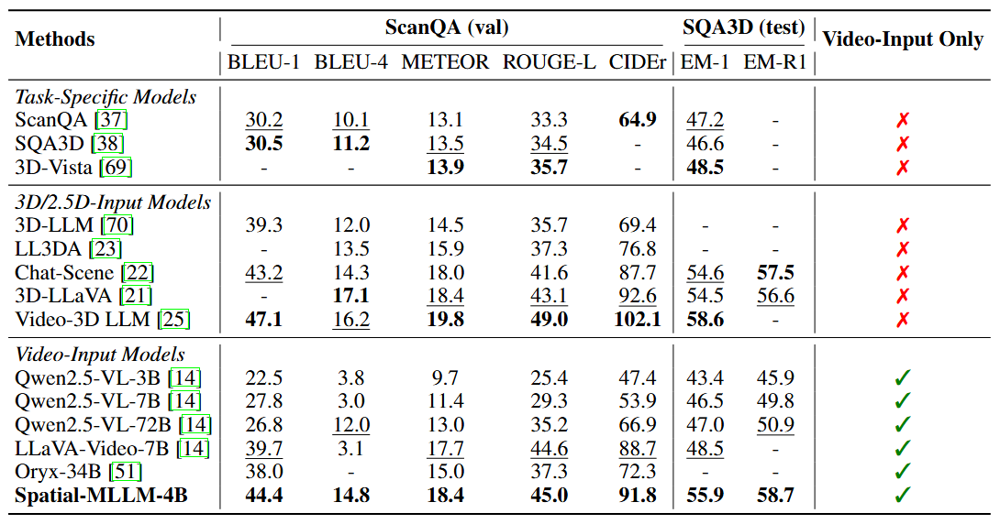

Recent advancements in Multimodal Large Language Models (MLLMs) have significantly enhanced performance on 2D visual tasks. However, improving their spatial intelligence remains a challenge. Existing 3D MLLMs always rely on additional 3D or 2.5D data to incorporate spatial awareness, restricting their utility in scenarios with only 2D inputs, such as images or videos. In this paper, we present Spatial-MLLM, a novel framework for visual-based spatial reasoning from purely 2D observations. Unlike conventional video MLLMs which rely on CLIP-based visual encoders optimized for semantic understanding, our key insight is to unleash the strong structure prior from the feed-forward visual geometry foundation model. Specifically, we propose a dual-encoder architecture: a pretrained 2D visual encoder to extract semantic features, and a spatial encoder—initialized from the backbone of the visual geometry model—to extract 3D structure features. A connector then integrates both features into unified visual tokens for enhanced spatial understanding. Furthermore, we propose a space-aware frame sampling strategy at inference time, which selects the spatially informative frames of a video sequence, ensuring that even under limited token length, the model focuses on frames critical for spatial reasoning. Beyond architecture improvements, we construct the Spatial-MLLM-120k dataset and train the model on it using supervised fine-tuning and GRPO. Extensive experiments on various real-world datasets demonstrate that our spatial-MLLM achieves state-of-the-art performance in a wide range of visual-based spatial understanding and reasoning tasks.

Overview of Spatial-MLLM. Our model is composed of a 2D visual encoder, a spatial encoder which is initialized from a feed-forward visual geometry foundation model, a connector, and a large language model backbone. At inference time, we incorporate a space-aware frame sampling strategy to select spatially informative frames when the number of input frames is limited due to GPU memory constraints.

Evaluation Results on VSI‑Bench. For Spatial‑MLLM and Qwen‑2.5 VL‑series we use 16 frames as input. For other open‑source methods and GPT‑4o, we follow the VSI‑Bench setting and use the frame counts specified there (ranging from 8 to 32 frames). For Gemini‑1.5 Pro, video frames are sampled at 1 FPS. Bold and underline indicate the best‑performing and second‑best‑performing open‑source models, respectively.

Evaluation Results on ScanQA and SQA3D. We use the validation set of ScanQA and the test set of SQA3D for evaluation, following common practice. Bold and underline indicate the best‑performing and second‑best‑performing models in each model category, respectively.
@article{wu2025spatialmllmboostingmllmcapabilities,
title={Spatial-MLLM: Boosting MLLM Capabilities in Visual-based Spatial Intelligence},
author={Wu, Diankun and Liu, Fangfu and Hung, Yi-Hsin and Duan, Yueqi},
journal={arXiv preprint arXiv:2505.23747},
year={2025}
}